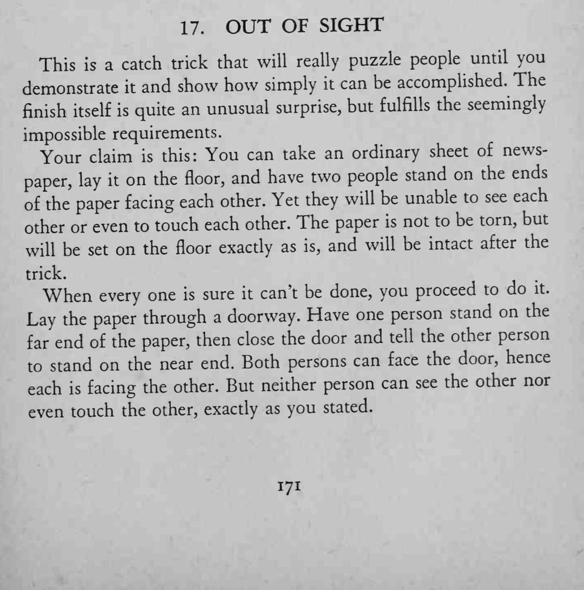

两人站在铺过门槛的报纸两端、面对面，门一关，两人就互相看不见也摸不到。
报纸不能撕、也不能移动，门必须能关严。

This is a catch trick that will really puzzle people until you demonstrate and show how simply it can be accomplished. The finish itself is quite an unusual surprise, but fulfills the seemingly impossible requirements. Your claim this: You can take an ordinary sheet of newspaper, lay on the floor, and have two people stand on the ends of the paper facing each other. Yet they will be unable to see each other or even to touch each other. The paper is not to be torn, but will be set on the floor exactly as is, and will be intact after the trick. When every one is sure it can't be done, you proceed to do it. Lay the paper through a doorway. Have one person stand on the far end of the paper, then close the door and tell the other person to stand on the near end. Both persons can face the door, hence each facing the other. But neither person can see the other nor even touch the other, exactly as you stated.